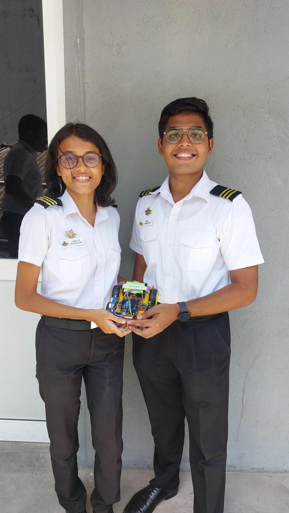
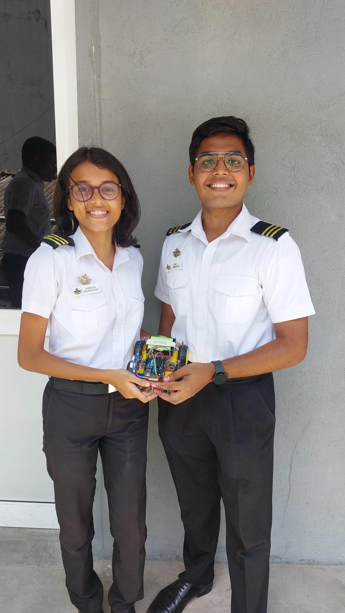

Project Overview
This innovative autonomous navigation project demonstrates the integration of embedded systems, sensor technology, and intelligent control algorithms. The wall-following robot showcases advanced skills in real-time sensor processing, motor control, and autonomous decision-making using Arduino-based microcontroller technology.
 

🔧 Key Components & Features
Arduino Uno Microcontroller
Acts as the main control unit, running the navigation algorithm and processing sensor data for real-time decision-making and autonomous operation.
Ultrasonic Sensor (HC-SR04)
Enables precise distance measurement from surrounding walls, providing accurate wall tracking capabilities with real-time feedback for navigation control.
L298N Motor Driver
Powers and controls the DC motors with precise speed modulation, allowing smooth directional changes and optimal navigation performance.
DC Gear Motors
Provide reliable locomotion with sufficient torque for smooth movement and responsive directional control during autonomous navigation.
Chassis & Wheel Assembly
Robust mechanical platform designed for stability and maneuverability, optimized for competition environments and various surface conditions.
Power Management System
Efficient battery management ensuring consistent performance throughout competition runs with stable voltage regulation for all components.
Technical Implementation
Control Algorithm: The Arduino Uno runs a sophisticated control algorithm that continuously processes ultrasonic sensor data to maintain optimal wall-following distance through proportional control mechanisms.
Navigation Logic: The system employs real-time sensor feedback to make intelligent navigation decisions, adjusting motor speeds dynamically to maintain consistent wall tracking while avoiding obstacles.
Sensor Integration: Advanced sensor fusion techniques ensure reliable distance measurement and environmental awareness, enabling smooth autonomous operation in various competition scenarios.
Skills & Technologies
Project Outcomes
This project successfully demonstrates the integration of multiple engineering disciplines:
- Embedded Programming: Efficient real-time control algorithms and sensor data processing
- Sensor Technology: Precise ultrasonic distance measurement and environmental sensing
- Motor Control: Smooth speed regulation and directional control for optimal navigation
- Autonomous Systems: Intelligent decision-making capabilities for independent operation
The completed robot successfully navigates along walls with consistent distance maintenance, demonstrating advanced skills in autonomous robotics, embedded systems design, and algorithmic thinking for competitive robotics applications.